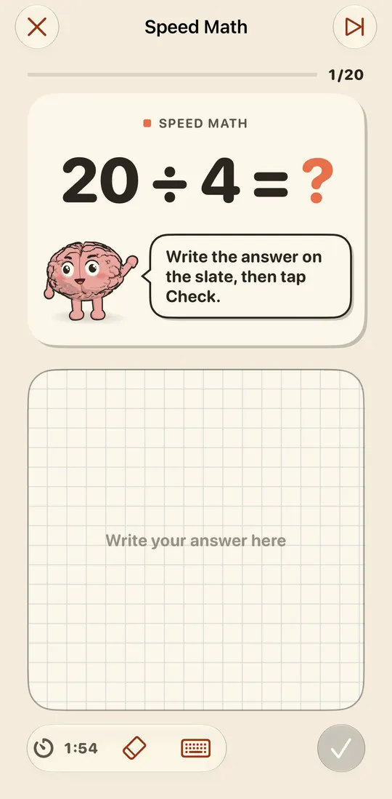
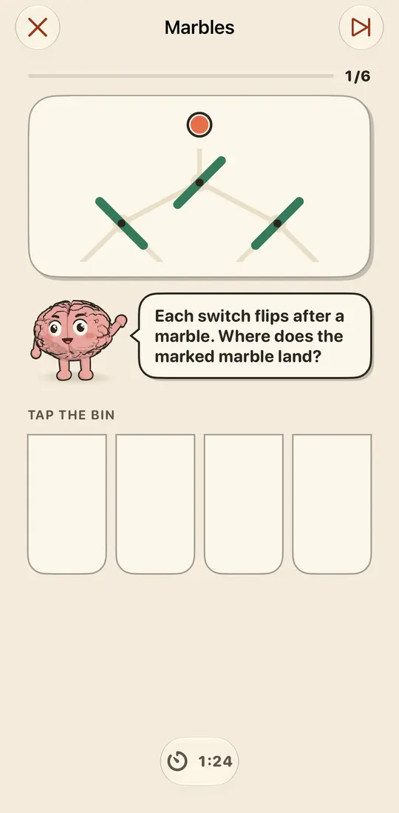
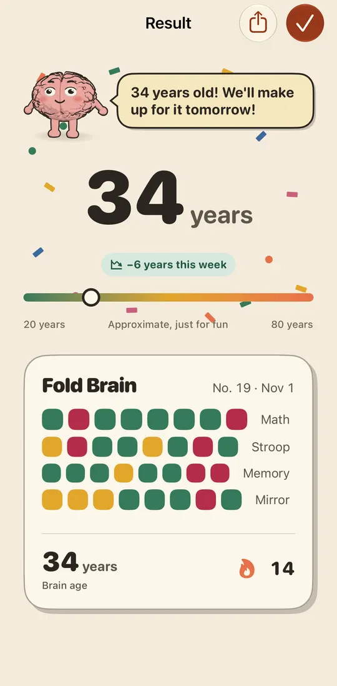

الحساب
جمع وطرح وجداول ضرب وقسمة تزداد صعوبة، والإجابة بخط يدك.
ثمانية تمارين قصيرة في أربع فئات: الحساب والانتباه والذاكرة والمكان. كل يوم تمرين من كل فئة. تقرأ السؤال في الأعلى وتجيب بإصبعك في الأسفل. Plio يرافقك في كل تمرين.
جمع وطرح وجداول ضرب وقسمة تزداد صعوبة، والإجابة بخط يدك.
المس لون الحبر لا الكلمة. أو صنّف الأشكال بينما تتغيّر القاعدة.
احفظ سلسلة أرقام ثم اكتبها. أو تتبّع كرة عبر محوّلات تنقلب.
انسخ نمطًا كمرآة عبر الطيّة، واعثر على منظر كومة مكعبات، ورتّب الأشياء حسب الوزن.



بعد كل جلسة، يُظهر عمر دماغك مدى تقدّمك. ختم لكل يوم لعبت فيه، وختم ذهبي لكل جلسة مثالية. ولوحات صدارة وإنجازات Game Center إن رغبت.
مفتوح: اللعبة فوق الطيّة، واللوح تحتها. مطويّ بزاوية 90° وموضوع: تصبح الشاشة العلوية سبورة ويجلس Plio على حافتها. مغلق: كل شيء يتّسع على الشاشة الخارجية.
اللعبة أعلى الشاشة، واللوح في الأسفل تحت إبهامك. ومن دون طيّة، تنقسم الشاشة ببساطة إلى قسمين.
اللعبة على اليسار، ولوح كبير على اليمين للكتابة بالقلم.
لا. Fold Brain كامل على أي iPhone وiPad: من دون طيّة تنقسم الشاشة ببساطة إلى قسمين. ويضيف Duo وضع المكتب والألعاب التي تعبر الطيّة.
نعم. الجلسات والكتابة والتذكير تعمل دون اتصال. تحتاج إلى الاتصال فقط للشراء أو استعادة الشراء أو إرسال نتائجك إلى Game Center.
لا. الكتابة بالإصبع تعمل بالقدر نفسه، أو انتقل إلى لوحة الأرقام من شريط الأدوات.
من الإعدادات > الشراء > استعادة الشراء، بحساب Apple نفسه. المشاركة العائلية مشمولة.
تبقى جلساتك على جهاز iPhone. بلا حساب ولا إعلانات ولا تتبّع. التفاصيل في سياسة الخصوصية.